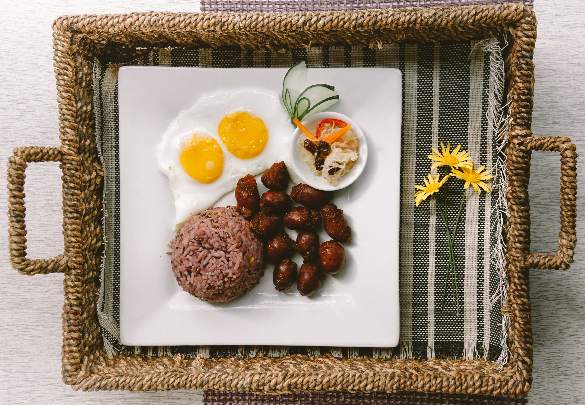

Longsilog

Ingredients
- Longanisa
- 1 pack of longanisa
- ½ cup of water
- Sinangag (Garlic Fried Rice)
- 2 cups of day-old cooked jasmine rice (or any rice of choice)
- 4 cloves of garlic
- 3 tsp of cooking oil of choice
- 2 tsp of salt
- 2 tsp of black pepper
- 4 Eggs (Itlog)
Ingredients
- Pour ½ cup of water into a pan and bring to a light boil on low to medium heat
- Add longanisa to the boiling water and cook for about 20 minutes or until all of the water has evaporated
- While allowing longanisa to boil, mince 4 cloves of garlic for the sinangag
- Continue frying on pan until the sausages are darkened/caramelized all around
- Separate links by cutting with scissors or a fork
- Turn off stove and cover pan with aluminum foil while cooking the rest of the dish
- In a separate pan, add 3 tsp of cooking oil and turn to medium heat
- When the oil is heated, add minced garlic to the pan and cook until golden brown
- Make sure that the oil is not too hot to ensure that the garlic does not burn
- Add the day-old rice to the pan and stirfry for 3-5 minutes, making sure that rice is coated with oil and garlic is mixed with rice well
- The day-old rice prevents the rice from breaking apart during a second cooking
- Turn off heat and add salt and pepper to the rice, giving the sinagnag a final mix
- Transfer sinangag to plates and use the same pan to fry two eggs
- Add salt, pepper, and parsley to the eggs
- Transfer the longanisa and fried eggs to the plates
- Can be served with Filipino banana sauce (banana ketchup)